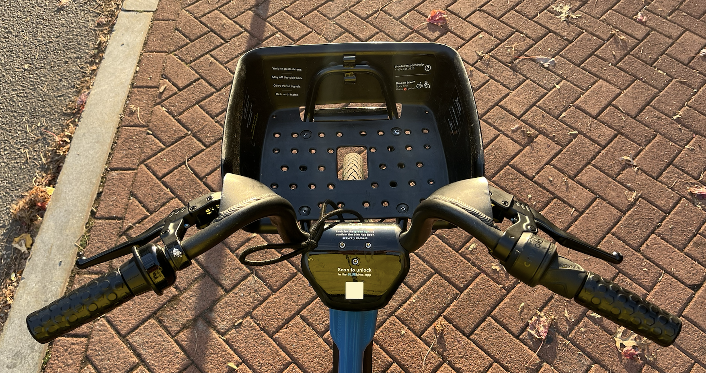

Intersaccadic Perception on Massachusetts Avenue
Seeing without looking
Wednesday, November 27, 2024 · 3 min read
On the crispest, sunniest mornings, Massachusetts Avenue shines as if made of flowing gold. When I bike to work from Harvard to MIT, I ride straight into the sun: squinting into the brightness, holding up my gloved hand to shade my eyes. When I come to traffic lights I look down, dazed, and wait for my vision to adjust. I stare at my bike’s front wheel through a hole in my basket. Even the dusty tire blazes in the sunlight.
Sometimes, these moments feel almost unbearably beautiful to me: the street, the wheel, the tire-tread, the braided pattern of grooves burnt in by piercing morning rays.

When the light turns green, I only know it because the trucks around me start moving. I begin pedaling and my front wheel spins up. The tire-treads blur into streaks, impossible to resolve with my eyes. I look cautiously back up at the road.
But then a strange thing happens. When I look up, I think I see a flash of the tire-treads in my vision: the pattern of the grooves is sharp, but phantasmic, like an afterimage. I look down at the wheel—still a blur. I look up at the road—there’s that flash again.
What is going on?
It takes me a few blocks to form a theory. Here it is: when my eyes saccade from wheel to road, they speed up and slow down in their sockets. If the saccade is fast enough, then at some point—by the intermediate value theorem—the motion of my retinas must coincide perfectly with the motion of the image of the wheel, leaving a clear-but-fleeting impression of the treads in my mind. The flash I am seeing is vision between vision.
Is this theory plausible? I park the bike, I do some envelope math. Relative to me, the top of the wheel should move at the same speed as the bicycle does relative to the ground. I bike at around 15mph, and my wheel’s rim is about a yard from my eyes. By a speed-to-angular-velocity calculation, that gives the bicycle an angular velocity of about 200°/s on my retina. Reading off the “main sequence”, it turns out that saccades that reach a peak velocity of 200º/s are on the order of 5º of travel. That seems to me like a plausible measure of my wheel-to-road saccade, so at an order-of-magnitude level, at least, I would say this theory checks out.
Okay, (I start to worry), but is it really possible to perceive anything at all during a saccade? What about “saccadic suppression”? But it turns out that we really can perceive during our saccades, and indeed this type of “intersaccadic percepetion” is tested with stimuli not unlike my bicycle wheel. And what about the sun (I continue worrying)? Is the blazing sunlight necessary for this effect? Certainly, I have only ever noticed it on blindingly bright days. But why would that be? Does my theory predict this? I’m not sure yet. Perhaps in dimmer conditions, my pupils are slightly dilated, and so my lenses need to do more work to refocus from the wheel to the (further-away) street. This would interfere with the formation of the sharp intersaccadic percept. It might also simply be the case that only in bright sunlight is the contrast between tire and groove severe enough for the effect to really stand out.
I have more concerns. But now I’m in the elevator, and late, and it is time to get on with the day.
I worry a lot about what, if anything, I am learning in graduate school. It is true that at some level, my PhD program is vocational: I am learning to do science, I am preparing for a career as a researcher. I have no doubt that I am gaining those skills (or at the very least, that very gifted teachers are trying their best on me).
But I came to graduate school for more than that, I think. I want to emerge with some better understanding of myself: of what I am and how I work, of what it means to be human, of what the great mysteries of our world are. I want this understanding to serve me no matter what discipline or career I choose for myself. I really did “enter to grow in wisdom.”
In the maelstorm of everyday life at MIT, it is very difficult to say, at the end of a long week or semester, what exactly you have learned, how exactly you have grown. If anything, graduates school is an endeavor of discovering more and more things you do not understand.
These moments on bicycles, then, are precious to me. Strange and rare and trivial though they may be, they are all I have to remind me that, yes, I really do see the world differently—more-ly—than before.